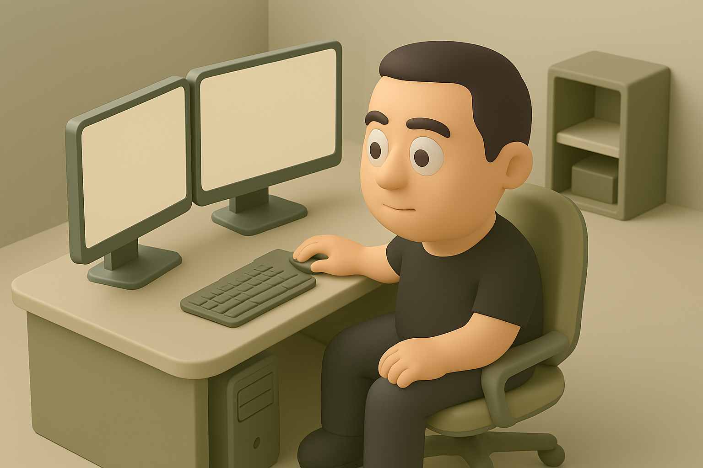

Engenharia de Prompts - Interativo

Explora as Técnicas
Clica numa técnica para aprender mais sobre ela e ver exemplos:
Instruções Claras
Contexto
Formato
Exemplos (Few-Shot)
Persona / Papel
Passo-a-Passo
Iteração
Seleciona uma técnica acima.
Testa os Teus Prompts! (50 Perguntas)
A carregar pergunta...
Verificar / Próxima